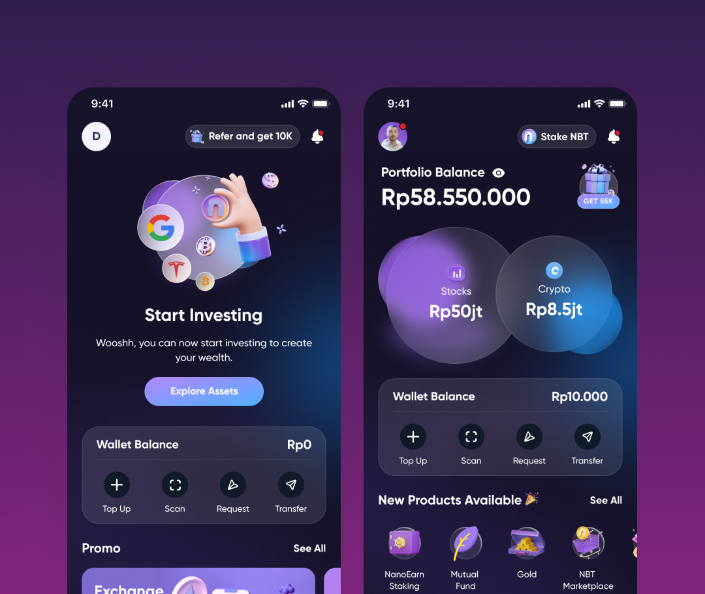
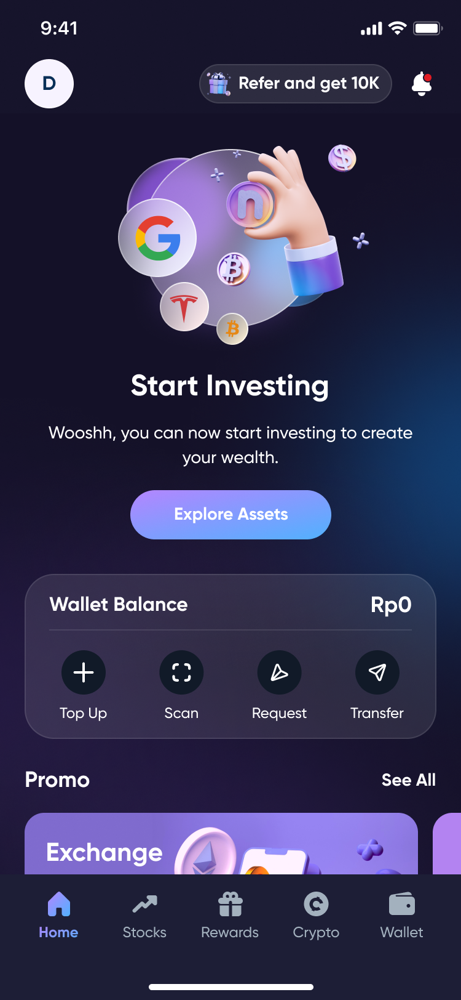
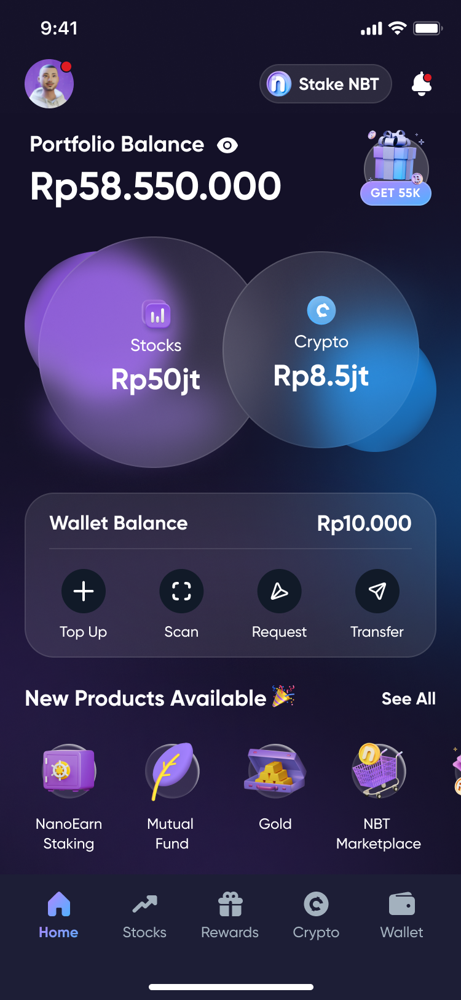
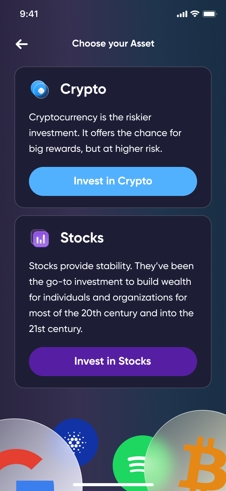
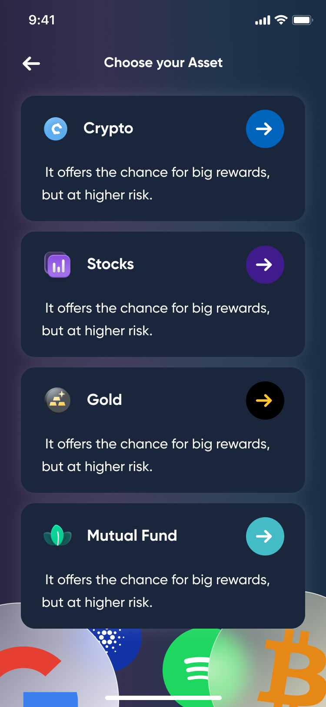
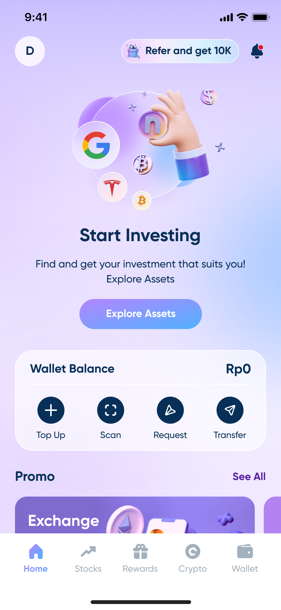
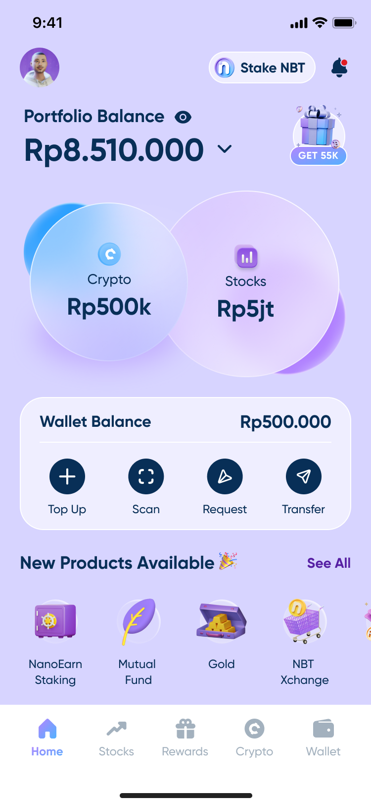
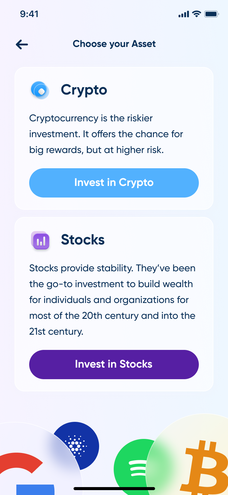
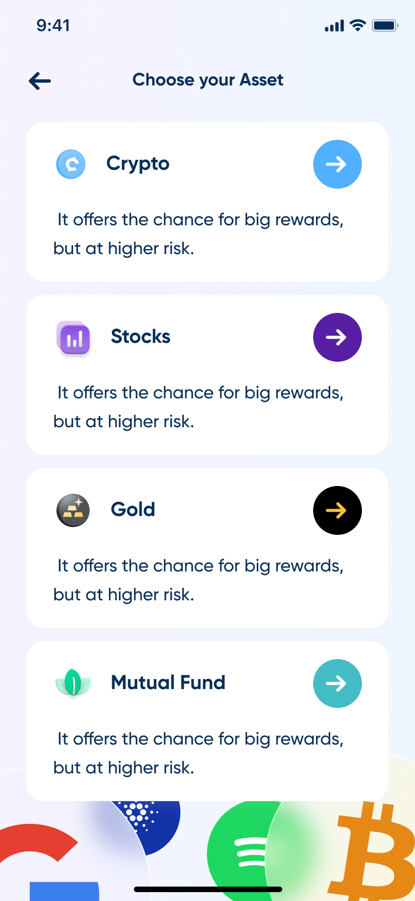

Nanovest Investment App
Sesi pertama yang lebih terpandu dan jalur lebih pendek menuju transaksi pertama: lebih sedikit langkah setelah login, dan dua cara masuk dari home screen yang sama, explore aset atau langsung invest.
Kunjungi nanovest.io- Klien
- Sektor
- Peran
- Tim
- Periode
- Permukaan

Ringkasan
Nanovest ingin memperpendek jarak antara login dan transaksi pertama, dan home screen yang tidak pernah membiarkan investor baru menebak-nebak harus ngapain. Jadi home ini membawa dua cara masuk sekaligus: jelajahi dulu semuanya, atau langsung membeli, bukan memaksa satu jalur untuk semua orang.
Cakupan
- 01Wawancara stakeholder
- 02Bedah kompetitor
- 03Alur onboarding
- 04Arsitektur informasi
- 05User flow
- 06Wireframe
- 07Desain antarmuka
- 08Empty & zero-balance state
- 09Prototyping
- 10Design QA
Masalah
Akun baru punya dashboard, bukan panduan.
Login menjatuhkan semua investor ke layar yang sama, tanpa jalan ke depan untuk yang paling penting: akun yang belum memegang apa pun. Layoutnya berasumsi keputusan sudah diambil (mau beli apa, berapa banyak, kelas aset mana), padahal pertanyaan pertama yang sebenarnya jauh lebih sederhana: mulai dari mana?
Sampai ke transaksi pertama makan lebih banyak ketukan daripada seharusnya, tiap satu keputusan tanpa panduan dan tanpa default. Tidak ada yang bilang mulai di sini di home screen, jadi investor baru mentok sebelum transaksi pertamanya atau tersesat di menu yang dibuat untuk orang yang sudah tahu mau ngapain.
Pendekatan
Dua cara masuk, diputuskan dari satu layar.
Sesi pertama disederhanakan jadi satu layar dan satu keputusan: Explore Assets, untuk yang mau lihat-lihat dulu, atau tombol langsung Invest in Crypto / Invest in Stocks, untuk yang sudah tahu mau apa. Tidak ada jalur yang jadi satu-satunya pintu; keduanya berangkat dari home yang sama.
Explore Assets membuka daftar terpandu (Crypto, Stocks, Gold, Mutual Fund), satu kalimat pitch yang sama dan satu ketukan maju di masing-masing, jadi menjelajah tidak pernah berubah jadi riset. Langsung memilih kelas aset sebaliknya membuka picker dua kartu, satu paragraf konteks per kelas, satu CTA masing-masing; keputusannya diambil sekali, sebelum layar mana pun menanyakan nominal.
Begitu akun benar-benar memegang sesuatu, Stocks dan Crypto berubah jadi dua bubble alih-alih satu angka gabungan, duduk di atas baris Wallet Balance (Top Up, Scan, Request, Transfer) yang tetap di posisinya baik portofolionya berisi lima instrumen maupun kosong. Panduannya tidak hilang begitu seseorang jadi investor; ia cuma berubah bentuk.
Layar







